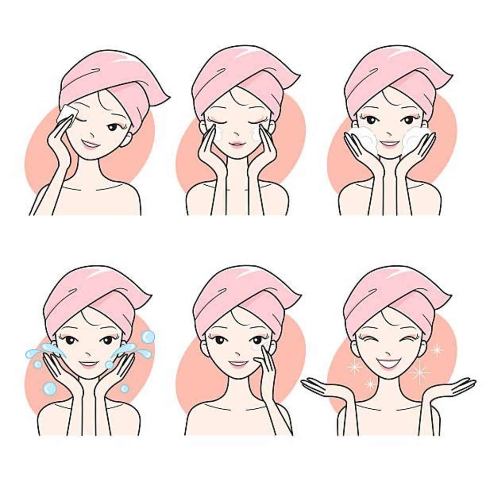

الصفحة الرئيسية
أنواع البشرة

أنواع البشرة
للبشره اربعة الوان وهي:
البشرة العادية
البشرة الجافة
البشرة الدهنية
البشرةالمختلطة
هناك أربعة أنواع أساسية من البشرة السليمة: البشرة العادية والبشرة الجافة والبشرة الدهنية والبشرة المختلطة. يتم تحديد نوع البشرة عن طريق الوراثة. ومع ذلك، يمكن أن تختلف حالة بشرتنا إلى حد كبير بحسب العوامل الداخلية والخارجية المختلفة التي تتعرض لها ويمكنكِ تحديد نوع بشرتكِ بسهولة عن طريق إجراء اختبار التالي.